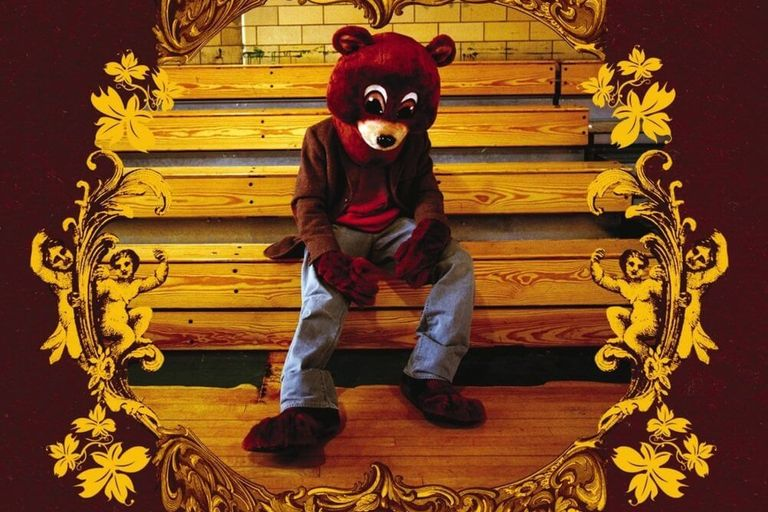
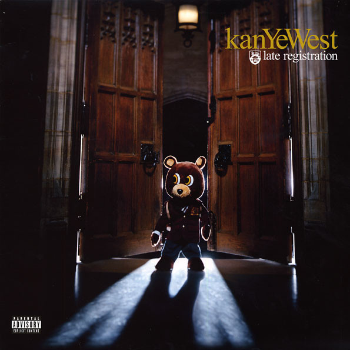
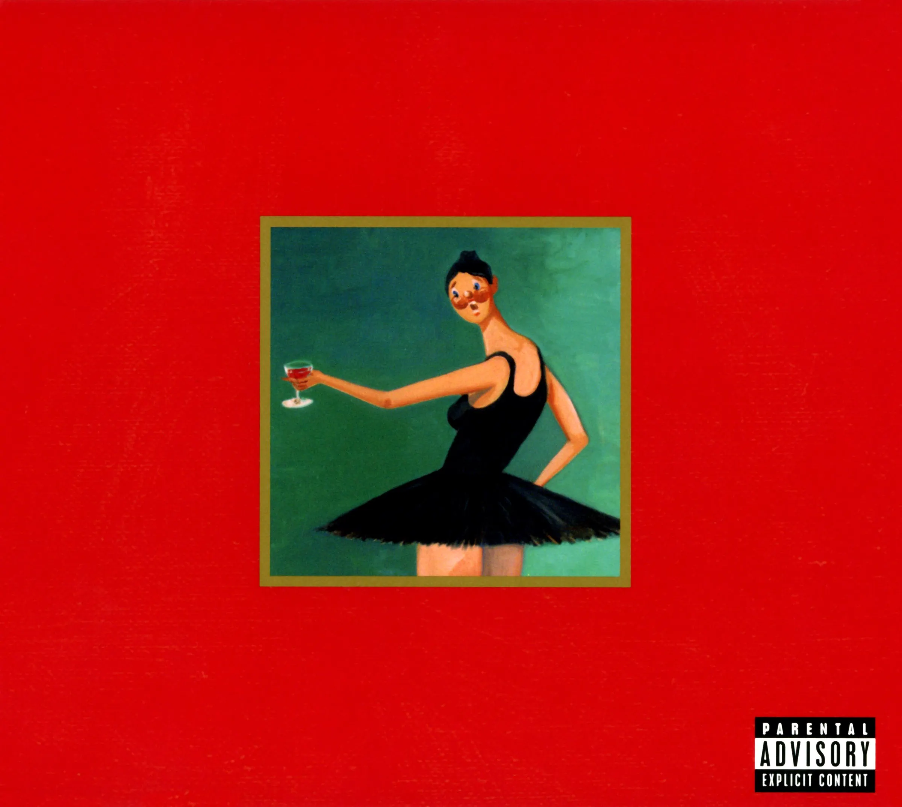

About Kanye West
Kanye West, born on June 8, 1977, is an American rapper, singer, songwriter, record producer, and fashion designer. Known for his bold and innovative approach to music and fashion, Kanye has left an indelible mark on the entertainment industry.
His critically acclaimed albums, such as "The College Dropout," "Late Registration," and "My Beautiful Dark Twisted Fantasy," have earned him numerous awards and a dedicated fan base worldwide.
This fan site is dedicated to celebrating Kanye West's contributions to art and culture. Join us on this journey to explore his life, achievements, and the impact he has had on the world.


